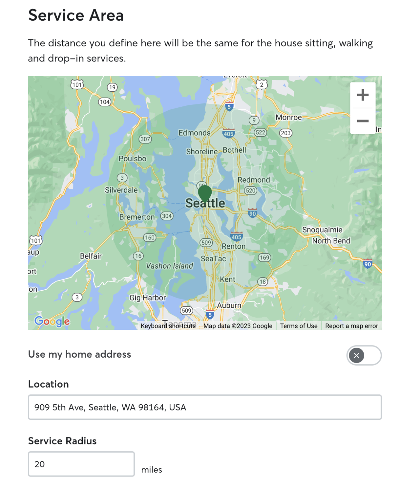

Rover · 2024–2025 · Search & Supply
+4% bookings · +7% match quality · +5–6% revenue per searcher
01 · Origin
Sitters historically set a simple circular radius — easy to build, blind to real geography. Sitters told us: "I'm getting requests within my radius that are practically impossible." Owners saw sitters as available, only to be declined because the trip was too far.
This started at Maker Days: a small team explored whether we could replace the straight-line circle with a polygon reflecting how sitters actually move. That prototype became the product.
Research session prototype — sitter sees existing circular radius, then it redraws as a travel-distance polygon using Mapbox isochrone API. Annotated: distance vs. time toggle; per-service configuration. Captures the "aha moment."
The prototype shaped the core model: distance or time, per service type.
02 · Research
In moderated sessions, sitters reacted to their areas being redrawn, adjusted distance/time and travel mode, and talked through how far they'd go for different service types.
Three design anchors: sitters think in miles and minutes; irregular road-based shapes feel more intuitive than circles; and they want different areas per traveling service — wider for house sitting, more local for walks in dense cities.
Settings UI — live polygon map view updating in real time as sitter adjusts distance/time and travel mode. Tab structure showing per-service configuration. Side-by-side with old circular radius UI.
The settings UI made the polygon feel controllable — not something the algorithm did to you.
03 · Results
Two geographic A/B tests. Both waves: better matching, better conversion, strong sitter adoption — committed to global rollout instead of extending the split.
Search-to-request +2–3% relative. Search-to-book +1.6–2.8%. Match quality +7%. Revenue per searcher +5–6% in US markets.
match quality improvement — sitters closer and more likely to accept